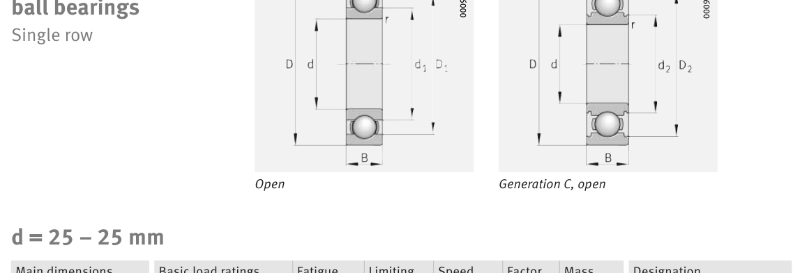

Original catalogue drawing - FAG Schaeffler HR 1, page 244

Scanned from the manufacturer catalogue page listing this part number. All part numbers printed on that table share the same drawing.
Scale cross-section
Blue = inner / outer ring, yellow = rolling element. Drawn to scale from this part's own
dimensions for selection reference only - not a manufacturing or assembly drawing.
Dimension table (mm / inch)
Symbol
Dimension
mm
inch
d
Bore diameter
25
0.9843
D
Outside diameter
62
2.4409
B
Inner-ring / bearing width
24
0.9449
r
Chamfer (min)
1.1
0.0433
Notes
Weights are given in kg. Load ratings are shown in both the original catalogue units and the converted value (1 N = 0.2248 lbf). Data is provided for selection reference only - confirm against the latest official catalogue before ordering.
Main dimensions
Bore d (mm)
25
Outside dia. D (mm)
62
Width B (mm)
24
Seal outside dia. D2 (mm)
52.8
Load ratings & speeds
Basic dynamic load rating Cr (lbs)
5350
Basic static load rating Cor (lbs)
2585
Basic dynamic load rating Cr (N)
23800
Basic static load rating C0r (N)
11500
Fatigue limit load Cur (N)
770
Factor f0
12.4
Limiting speed nG (rpm)
7,300
Weight
Weight (kg)
0.316
Mounting dimensions (fillets / shoulders)
Housing fillet r max (mm)
1.1
Shaft shoulder da (mm)
32
Housing shoulder Da (mm)
55
Housing fillet ra max (mm)
1
Bearing life (ISO 281 basic rating life)
C / P
Equivalent load P (N)
L10 (106 rev)
L10h at 2,400 rpm
4
5,950
64
444
6
3,967
216
1,500
8
2,975
512
3,556
10
2,380
1,000
6,944
15
1,587
3,375
23,438
Basic rating life per ISO 281: L10 = (C/P)3 with C = 23,800 N. Hours = L10 x 106 / (60n). Life-modification factors for lubrication, contamination and temperature (aISO) are not included.
Source & traceability
Brand
FAG
Source catalogue
FAG / Schaeffler Rolling Bearings HR 1
Catalogue page
p.244 (dimensions)
Load ratings in newtons, fatigue limit load Cur, limiting speed nG and reference speed nB.
Send us the quantity you need and we will come back with price and
lead time, normally within 24 hours. Equivalent parts from other brands can be quoted at the same time.